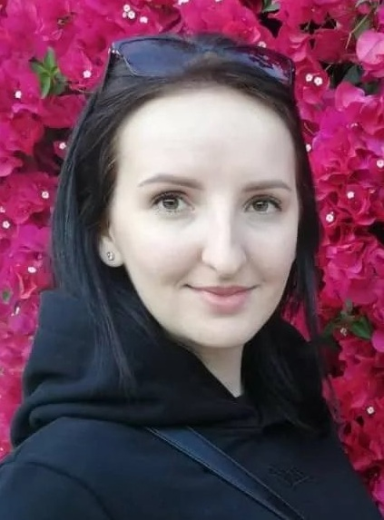

Iryna Novozhen

Personal information:
- Date of birth:16/07/1994
- Place of birth:Ukraine
- Education level: Master degree (Physical Rehabilitation)
- Certificates: FMT, DNS, miofascial release Black Roll
- Language: English / Russian / Ukrainian
Rehabilitation experience:
- Above 5 years’ experience in rehabilitation field
- Above 500 cases correct of poor posture, back pain, musculoskeletal disorders, etc.
- Above 3000 rehabilitations and SPA procedures ( rehabilitation diagnosis, massage, physical therapy, stretching, body wrapping, scrubbing and etc. )
- Above 200 hours courses as a lector
Academic credential:
- Master of Physical Therapist, Lviv state university of physical culture, Sep 2016 – Feb 2018
- Miofascial release Black Roll. Lviv Fitness Weekend, Lviv, Oct 2017.
- FMT basic + Performance, FMT Screen + Mobility, FMT Blades, FMT RockPods + FMT RockFloss. Functional Training by Rock Tape, Lviv, Apr 2019 – May 2019, Oct 2020.
- Practical and prevention approach to sport training. Functional Training by Sportiva, Lviv, Sep 2019.
- Introduction to DNS rehabilitation strategy. Zarpa, Lviv, Oct 2019.
Additional information
| Fond of sports: |
Confident PCuser |
Love pets |
| hiking |
| stretching |
| judo |
| horse riding |